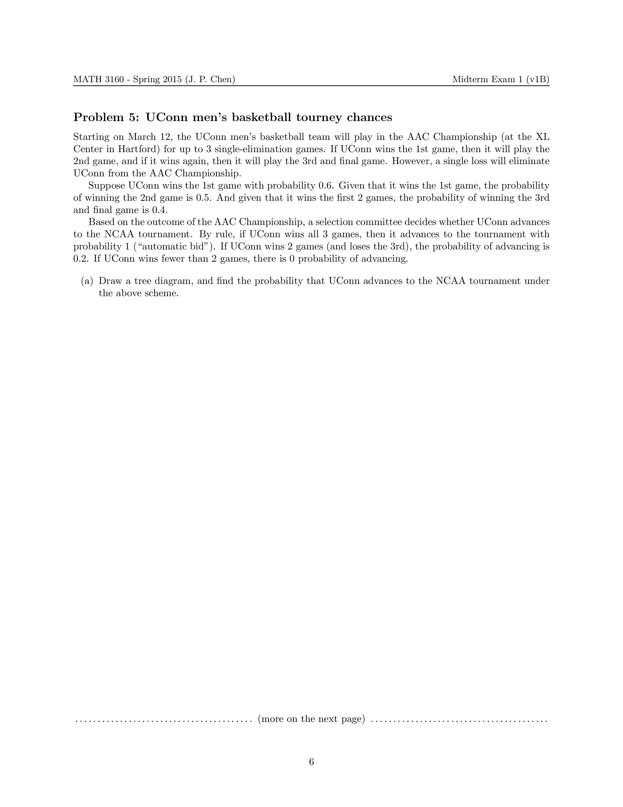
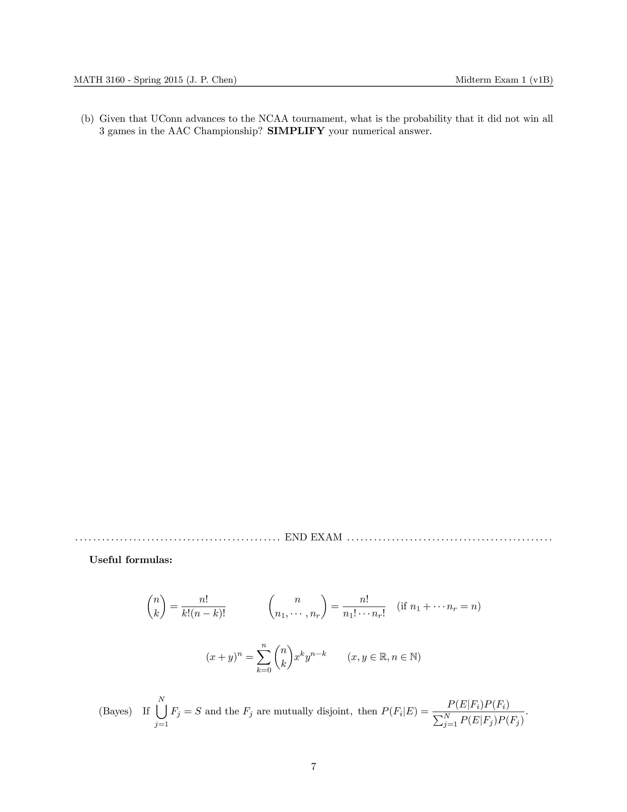

|  |  |
Math concepts used: Conditional probability. Bayes' formula.
Background: After the aforementioned loss to Yale, the UConn MBB team of 2014-15 did not improve much since, and needed a title in the American Athletic Conference (AAC) Tournament to secure an automatic bid for the NCAA Tournament. The AAC tournament was/is played in single-elimination format: win or go home. If UConn loses at any point, they would have virtually no chance of getting a bid for the NCAA Tournament.
What I did: Since students at the time had just finished learning about conditional probability, I had to ask more straightforward questions that involved nothing but conditional probability. And the problem reflected that.
Aftermath: The UConn MBB team lost to SMU in the AAC Championship game, and did not get into the NCAA tournament.
Acknowledgements: Many thanks to UConn Honors student Danielle Deschene, a former student in my multivariable calculus and probability courses, for suggesting that I write this problem.
{kind=link}
{kind=link}